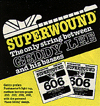

The free Labatt's lager aboard the Air Canada 727 tasted good, but the Heineken in Rush's dressing room refrigerator tastes even better. Not only that, there's more of it than even Bob and Doug McKenzie could drink. If only that cute brunette air hostess were here to serve it....
Backstage at the Montreal Forum, sandwiched between hockey nights, Rush is getting ready to play to a standing-room-only homegrown crowd. Here is a band that treats its fans as considerately as it treats reporters from Circus Magazine. Soundcheck took a full hour, and now Alex Lifeson is warming up some more in the tuning room, just to keep the fingering fluid and precise. He plays a variant of "Stormy Monday Blues" that would not have sounded out of place in John Mayall's Bluesbreakers.
The other two members of Rush -- Neil Peart and lead singer Geddy Lee -- are in hiding, Peart busy with a French lesson, Lee with a T.V. interview. Neither of these activities will interfere with the show, a spectacle that's roughly on a visual par with Pink Floyd's The Wall concerts.
"Rush is serious about its music," says manager Ray Danniels, who's arrived from Toronto to supervise business at the Forum. It's hard to doubt the man. Then again, it's hard to doubt Rush, three wealthy Canadians whose music-making ranks nevertheless among the least slipshod in the business. "The band terrorizes its record company," says rock writer John Swenson, referring to the stringent quality control Rush and its mastering engineer Bob Ludwig impose upon the final vinyl that we get to play at home. Geddy Lee himself attends mastering sessions, and Ludwig rejected at least two test pressings of the band's latest Mercury LP, Power Windows, before approving the ones that are now on your shelf or turntable. No wonder the record sounds so good -- for that reason, and the fact that most Mercury pressings are tops anyway.
Not that Rush spends all its time on music. Alex, Geddy and Neil all are married, with homes, apartments, cars, kids and dogs all over Ontario -- the province of Canada in which to live and work, since taxes are lower than Quebec's. Geddy and Alex play tennis together -- a shared activity that reflects their shared boyhood. ("Geddy and Alex both attended the same high school in Toronto," notes Kevin Flewitt, one of the band's two tour managers.) Neil stays trim on marathon bicycle rides; he commuted by bike between two California gigs during the first leg of Rush's North American tour.
When time permits, Alex rents a Cessna airplane and pilots it on short jaunts. Lifeson and his family also enjoy scuba diving when they go to the tropics -- or the warmer Canadian lakes -- on summer holidays. The guitarist, who's of Yugoslavian descent, made a pilgrimage to Belgrade and to the town where his father was born. His singing partner in Rush, Polish-descended Geddy Lee, shares not only a high school but an invented stage name with Lifeson. The only member of Rush who uses his family name is drummer Peart, who is of Welsh-English extraction. Like Lifeson, Peart enjoys a good bottle of wine. "I've never had a taste for beer," he explains scoffing good-naturedly at the glass in yours truly's hand. Alex doesn't scoff; he simply goes down to his private wine cellar on those occasions when he wants to unwind. "We don't rage like we used to," he says, "but it's good to rage once in a while."
One explanation of Rush's long career -- comprising 13 gold albums, six of which are platinum -- may lie in its members' ability to draw the line; not to go over the edge. In a business littered with the detritus of smashed careers, car wrecks and overdose cases, Rush seems like a folk group booked on studs-and-leather night at L'Amour. Any mild-mannered rock & roller could drink all three of them under the table and possibly go home with the first available sweetie as well. (Rush are perfectly happy with their wives.)
"We've seen it happen right before our eyes," says Neil. Shared '70s dates with Aerosmith and Kiss were object lessons in how not to behave in show business. "It's not about to happen to us," he explains.
Instead of the usual backstage snow storms and Jack Daniels jags, the Rush trio prefers, well, books. The great Rush read-off was going on in Montreal, between soundcheck, interviews and shows. The guys almost seem to compete with one another as to which books are more worth reading. Neil points to Tom Robbins' Jitterbug Perfume, a recent favorite.
According to Peart, Alex reads airplane magazines and Geddy thumbs baseball rags. But look closely and you'll find a baseball book in Geddy's possession, while Alex usually carries a novel by James Michener or James Clavell with him everywhere. He follows the characters from novel to novel -- from King Rat to Noble House, Clavell's thick, oriental page-turner. "I love the way Michener starts his books," kids Lifeson; "In the beginning, the lions and zebras roamed the veldt. It's just funny how he has to include everything that happens."
From the sinister silence of the African veldt to the palpable electricity zipping around the Forum at 9 p.m. is no small jump. Fourteen thousand Montrealers have turned out to welcome Rush and its multimedia stage extravaganza. And with good reason: Ask Ray Danniels. "We have the best drummer in rock. We have one of the three best bass players." Danniels says only Steve Morse and one or two other guitarists like Allan Holdsworth are in Alex Lifeson's league. The only bassist he can name to rival Lee is Chris Squire.
 O.K., Bill Bruford, Simon Phillips, B.J. Wilson, Roger Earl, Jack Bruce, John Wetton, David Gilmour, Neal Schon, Craig MacGregor, John McLaughlin, Steve Hackett and a few others spring to mind, but this might be splitting technical hairs. The one weakness Rush displays live is in the vocals; but Geddy Lee's voice is strong, melodic too, as it cuts through on "Grand Designs," his tour-de-force from Power Windows. Lifeson spins out some lovely lead acoustic guitar (suitably amplified for the Forum) on "Mystic Rhythms," the potential hit single he co-wrote with Neil Peart. Neil himself is no slouch on the tune -- on "Witch Hunt" or "The Big Money" either.
The Power Windows tour may be Rush's last Cecil B. DeMille road extravanganza. The band spent about $325,000 recording the album -- and some $80,000 of that went for travel expenses to England and Montserrat. Rush's last contract with Mercury Records was based on anticipated sales of 2.6 million copies for each of the last four albums. Rush now sells an average of 1.2 million copies per album. It's an impressive figure, but not big enough to justify all those trips to the tropics when a Toronto studio could suffice.
The economics of the current tour is based on anticipated T-shirt sales that haven't been coming through. If the Power Windows tour turns a profit, it will be a small rock miracle. Remember, that's after a lot of sold-out houses.
If the tour doesn't earn its keep, Rush will have to scale down its budget. And perhaps stay in Montreal at the Centre Sheraton instead of the five-star Quatre Saisons next time.
Labatt's backstage instead of Heineken? It still tastes good. And Rush should sound as good on $250,000 as GTR does on $700,000.
These guys are smart. They know adaptability is the keynote to rock & roll survival. Rush has survived now for 16 years -- six years longer than even the Beatles did. No small feat.
{kind=link}